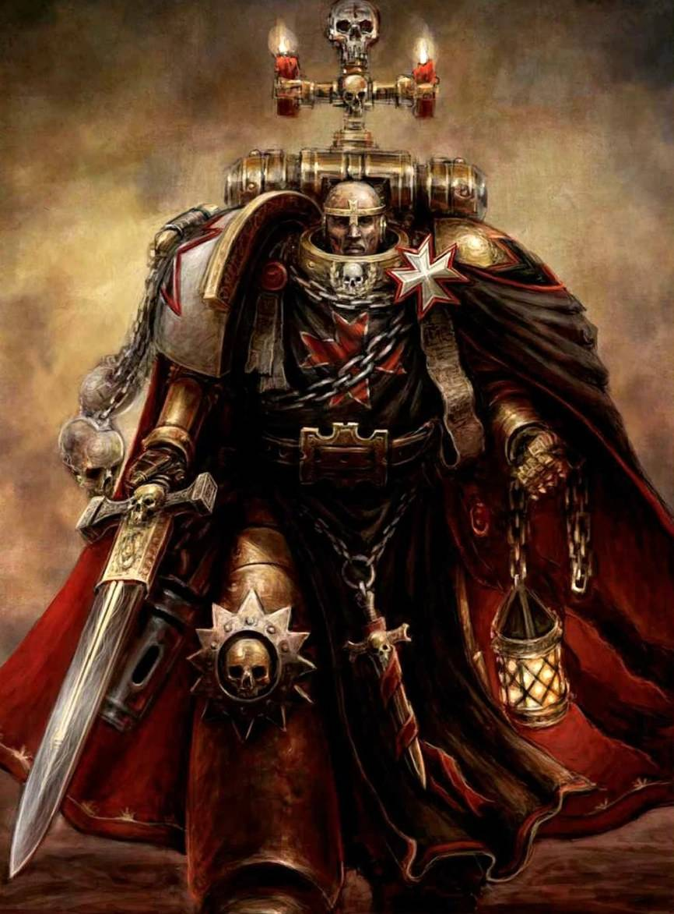

Helbrecht
| Helbrecht | |
|---|---|
| High Marshal of the Black Templars | |
 The High Marshal bearing the Sword of the High Marshals Artwork © Games Workshop | |
| High Marshal of the Black Templars | |
| Tenure | 990.M41 – present |
| Predecessor | Kordhel |
| Marshal of the Daidin Crusade | |
| Tenure | Mid-M41 – 990.M41 |
| Predecessor | Marshal Daidin |
| Born | c. 810–820.M41 (estimated) |
| Status | Active; crossed the Rubicon Primaris (early M42) |
| Allegiance | Imperium of Mankind |
| Chapter | Black Templars |
| Wargear | The Sword of the High Marshals; artificer armour; combi-melta |
| Known for | Command of the Astartes fleet at Armageddon (998.M41); the pursuit of Ghazghkull Thraka; his feud with Imotekh the Stormlord |
Helbrecht is the High Marshal, the Chapter Master, of the Black Templars, elected in 990.M41. He is accounted the greatest naval commander in the Adeptus Astartes, and in 998.M41 he commanded every Space Marine warship at the Third War for Armageddon, helping the Imperial Navy to break the Ork fleets. He then swore to pursue the warlord Ghazghkull Thraka across the galaxy, with Commissar Yarrick at his side.[1][2]
Stubborn, zealous and fiercely honourable, Helbrecht embodies the character of his Chapter. In the Era Indomitus, at the urging of Roboute Guilliman, he sent the Black Templars' crusades to defend every world of the Ecclesiarchy within reach, and he has himself crossed the Rubicon Primaris.[3]
Early career
[edit]Helbrecht's rise was swift. As an Initiate he held the line against a Tyranid swarm at Deathcore Ridge. As a Neophyte he witnessed the Vinculus Crusade of 833.M41, when High Marshal Ludoldus fought beside the Inquisitor Vinculus and the Order of the Bloody Rose against Chaos death cults on Peleregon IV. A few decades later he joined the Sword Brethren for killing a daemon prince with only his combat blade. He fought in Marshal Daidin's Crusade for many years and took command of it when Daidin died.[1][a]
Schrödinger VII
[edit]In 930.M41 the Necrons of Imotekh the Stormlord, phaeron of the Sautekh Dynasty, attacked the ice world of Schrödinger VII, and Marshal Helbrecht answered its distress call. His drop zones were struck by carefully planned ambushes, and he met Imotekh in single combat on an ice bridge above the cryonite mines. Helbrecht was the better swordsman, but the phaeron's living metal repaired every blow, and Helbrecht at last collapsed from his wounds. Imotekh cut off his right hand to mark the defeat and threw him from the bridge. The Templars carried their Marshal out and abandoned the world. Helbrecht swore an Oath of Vengeance against Imotekh. Later his crusade caught the Stormlord's flagship, the tombship Inevitable Conqueror, above Davatas; the battle barge Sigismund crippled it and the Templars boarded, but Imotekh teleported away, and Helbrecht could only send the empty ship into the nearest star.[1]
High Marshal
[edit]In 990.M41 High Marshal Kordhel was killed by a Khornate Berzerker, and the Marshals unanimously elected Helbrecht in his place. He received the Sword of the High Marshals, which by the decree of the first High Marshal, Sigismund, contains fragments of the sword that Rogal Dorn broke in grief after finding the Emperor's body aboard the Vengeful Spirit. He at once declared the Ghoul Stars Crusade against the Cythor Fiends, joined by the Death Spectres. In eight years the outlying systems were cleansed, but the aliens' core systems were found eerily empty. Before the mystery could be explored, word came that Ghazghkull had returned to Armageddon.[1]
Armageddon and the pursuit of Ghazghkull
[edit]Three crusades mustered at the Chapter keep on Fergax and went to Armageddon in 998.M41. Marshals Ricard and Amalrich took theirs to the surface, while Helbrecht, as the most experienced naval officer among the Astartes present, was given command of the combined Space Marine fleet. He led many boarding actions against Ork space hulks and, with Admiral Parol's battlefleet, crippled the Ork invasion in orbit. When the hulk believed to carry Ghazghkull withdrew, Helbrecht swore to follow it, and Commissar Sebastian Yarrick asked to come with him. They cornered the flagship Kill Wrecka, but Ghazghkull escaped into the Warp.[2]
Era Indomitus
[edit]When the Great Rift opened in 999.M41 the Black Templars fleet was scattered. As it regathered to resume the hunt for Ghazghkull, Guilliman arrived with news that many Ecclesiarchal worlds were under attack by Chaos. Helbrecht welcomed the primarch and the Primaris Space Marines he brought, but was set on his oath until Guilliman reminded him of the sword he carried and the duty it stood for. Chastened, Helbrecht sent crusades to every Ministorum world within reach. At some point after the opening of the Rift he crossed the Rubicon Primaris himself.[3][b]
Timeline
[edit]| Date | Event |
|---|---|
| 833.M41 | Witnesses the Vinculus Crusade as a Neophyte |
| Mid-M41 | Joins the Sword Brethren; later Marshal of the Daidin Crusade |
| 930.M41 | Defeated by Imotekh on Schrödinger VII |
| 990.M41 | Elected High Marshal; Ghoul Stars Crusade begins |
| 998.M41 | Commands the Astartes fleet at Armageddon; pursuit of Ghazghkull |
| 999.M41 | The Great Rift; Ecclesiarchal crusades on Guilliman's urging |
| Early M42 (estimated) | Crosses the Rubicon Primaris |
See also
[edit]Notes
[edit]References
[edit]- ^ a b c d Codex Adeptus Astartes - Space Marines (8th Edition), pp. 106, 136. Games Workshop. Psychic Awakening - Faith & Fury (8th Edition), pp. 42-43, 45. Games Workshop.
- ^ a b Dembski-Bowden, Aaron. Helsreach (novel). Black Library. WAAAGH! Ghazghkull - A Codex: Orks Supplement (7th Edition), "Da Great WAAAGH! - Pursuit and Evasion, The Great Green Beyond," "Tracking the Great WAAAGH! - Battle of Haunted Gulf", pp. 26-27, 34. Games Workshop.
- ^ a b Codex: Space Marines (6th Edition), pp. 51, 53, 116, 119, 152, 162. Games Workshop. Codex: Necrons (5th Edition), pp. 26-27, 55. Games Workshop.